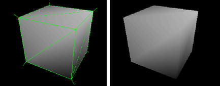

FBX 导出的“文件类型特定选项”(File Type Specific options)显示在“导出全部选项”(Export All Options)/“导出当前选择选项”(Export Selection Options)窗口中，并且可以使用 Maya FBX 插件将 Maya 文件保存为 FBX 文件。有关常规导出选项的信息，请参见导出全部选项(Export All Options)/导出当前选择选项(Export Selection Options)。
若要查看 FBX 的“文件类型特定选项”(File Type Specific options)，请执行以下操作：
- 选择/导出选定对象”(File > Export All/Export Selected)，然后从“文件类型”(File Type)下拉列表中选择“FBX 导出”(FBX Export)或“FBX_DAE 导出”(FBX_DAE Export)。
预设(Presets)
您可以在 FBX 插件“预设”(Presets)部分的菜单中选择预设。Maya FBX 插件有两个导出工作流预设：
- Autodesk Media & Entertainment
- “Autodesk Media & Entertainment”预设是 Maya FBX 插件导出器的默认预设。“Autodesk Media & Entertainment”预设包含适用于大多数动画工作流的最佳设置。
- Autodesk MotionBuilder
- “Autodesk MotionBuilder”预设用于将动画文件导出到 MotionBuilder。如果要使用“Maya 到 MotionBuilder，再返回到 Maya”工作流，请使用“Autodesk MotionBuilder”预设。此预设使用 FBX 导出选项的“约束”(Constraints)和“骨架定义”(Skeleton definitions)选项，这些选项是为使用 Maya 和 MotionBuilder 来实现最佳角色动画而设置的。
- 编辑预设(Editing presets)
-
如果更改预设中的任何设置，则预设字段将显示“用户定义”(User defined)，以表示该预设与其默认状态不同。插件会将“用户定义”(User defined)状态保存在一个临时文件中，这样您在下次使用插件时该设置将成为默认设置。
- 也可以将您的设置保存为自定义预设。请参见创建自定义预设。
包括选项(Include Options)
- 历史(History)
- 这是与 file -constructionHistory (-ch) 命令等效的 UI。
注： 可以在“节点编辑器”(Node Editor)中导出连接节点上的所选内容。如果构建历史输入选项（“历史”(History)）处于禁用状态（未选中），那么无论该设置如何，导出的选定节点都将保持其相互之间的历史节点属性连接。但在某些情况下，在导出之前被隐藏并且未被选中的任何辅助节点可能会断开这些节点连接。对于此特定工作流，请在“节点编辑器”(Node Editor)的“显示”(Show)菜单中启用辅助节点的显示，以确保在导出选择操作之前将这些节点包含在选择中。
- 通道(Channels)
- 这是与 file -channels(-chn) 命令等效的 UI。
- 表达式(Expressions)
- 这是与 file -expressions(-exp) 命令等效的 UI。
- 约束(Constraints)
- 这是与 file -constraints(-con) 命令等效的 UI。
几何体(Geometry)
- 平滑组(Smoothing Groups)
-
激活此选项后，Maya FBX 插件会将边信息转化为“平滑组”(Smoothing Groups)，并随文件一起导出它们。
如果禁用此选项，边信息不会转化为“平滑组”(Smoothing Groups)。
注：-
除非在导出时激活此选项，并在导入时激活“FBX 导入选项”(FBX Import options)中的“平滑组”(Smoothing Groups)选项，否则，在导出具有平滑边法线的 FBX 多边形对象时将使用不正确的法线信息重新导入 Maya。
- FBX Collada 导出器不会从 3ds Max 中导出“平滑组”(Smoothing Groups)数据。因此，FBX Collada 导入器在导入过程中会生成“平滑组”(Smoothing Groups)。
-
- 逐顶点分割法线(Split per-vertex Normals)
- 激活此选项可以基于边连续性分割几何体顶点法线。顶点法线决定了多边形面之间的视觉平滑效果。它们反映了 Maya 如何在平滑明暗处理模式下渲染多边形。
- 该选项仅适用于早期的 MotionBuilder 工作流，可确保表面连续性的视觉逼真效果。通过它，您可以将硬边信息传输给 MotionBuilder。
- 此工作流是必需的，因为 MotionBuilder 2010 版及更早版本中存在不支持 ByPolygonVertex 法线的限制。
- 使用此选项可在 MotionBuilder 中保持与 Maya 相同的硬边/软边外观。
- 如果 MotionBuilder 中不需要硬边，则无需使用该选项，因为该操作会复制顶点信息并转化几何体自身。您可以使用 FBX 导入器中的“逐顶点合并法线”(Combine per-vertex Normals)选项执行相反的操作，但是这可能会导致错误的 UV 纹理贴图，请参见此条目下面的注意事项。
- 如果使用的不是合并回工作流（将 FBX 合并到现有场景），使用此选项可能会导致将 FBX 文件重新导入到 Maya 中时生成错误的 UV 贴图。将您的 FBX 文件导入到原始 Maya 场景，以避免分割几何体存在几何体 UV 问题。
- 禁用“逐顶点分割法线”(Split per-vertex Normals)选项的情况下进行导出时会在 MotionBuilder 2010 及更早版本中生成以下效果：

激活“逐顶点分割法线”(Split per-vertex Normals)选项的情况下进行导出时会在 MotionBuilder 中生成以下效果：
 注： 使用此选项可以永久改变应用于几何体的 UV 贴图。之后，UV 将正确地重新指定给新分割的几何体。将此几何体导入到空 Maya 场景时，存在 UV 限制：即，使用“FBX 导入器”(FBX Importer)中的“逐顶点合并法线”(Combine per-vertex Normals)可能会导致错误的 UV 指定。
注： 使用此选项可以永久改变应用于几何体的 UV 贴图。之后，UV 将正确地重新指定给新分割的几何体。将此几何体导入到空 Maya 场景时，存在 UV 限制：即，使用“FBX 导入器”(FBX Importer)中的“逐顶点合并法线”(Combine per-vertex Normals)可能会导致错误的 UV 指定。 - 切线和次法线(Tangents and Binormals)
- 如果您希望 Maya FBX 插件根据网格的 UV 和法线信息创建切线和次法线数据，请激活此选项。这样您就拥有了网格的切线空间表示形式，可将其用于高级渲染。
注： 您的几何体必须具有 UV 信息，否则 Maya FBX 插件无法创建切线和次法线。
- 为网格中的每个顶点定义的局部坐标系（这种情况称为“切线空间”）时，导出切线和 binormal 数据十分有用。诸如法线贴图之类的高级渲染技术通常需要这样做。
- Maya FBX 插件会读取 UV 数据，并将其用于为逐像素照明中的法线扰动计算切线空间数据。
注： 存在影响此选项的已知限制。有关详细信息，请参见 FBX 限制主题中的“FBX 切线和次法线”。
- 平滑网格(Smooth Mesh)
- 通过“平滑网格”(Smooth Mesh)选项，可以导出含有平滑网格属性的源网格。若要导出源网格，请禁用 Maya 中的“平滑网格预览”(Smooth mesh Preview)属性，然后进行导出。
- 如果激活“平滑网格”(Smooth Mesh)选项，将不镶嵌细分网格，且源导出时将含有“平滑网格”(Smooth Mesh)数据。如果禁用“平滑网格”(Smooth Mesh)选项，将镶嵌细分网格，且导出时将不含“平滑网格”(Smooth Mesh)数据。
注： 如果在禁用 FBX 导出器的“平滑网格”(Smooth Mesh)选项的情况下从 Maya 导出“平滑网格”(Smooth Mesh)预览，则不会影响场景中的网格。获得的效果是文件中网格被镶嵌细分，而 Maya 场景中的原始源网格则未受到影响/未发生更改。
- 选择集(Selection Sets)
- “选择集”(Selection Sets)选项可以使您在导出过程中包含或排除“选择集”(Selection Sets)。
- 由于包含“选择集”(Selection Sets)可能会潜在地增加文件的大小，因此默认情况下此选项处于禁用状态，从而“选择集”(Selection Sets)不会被导出。
必须激活此选项才可以导出“选择集”(Selection Sets)。
- 转化为 Null 对象(Convert to Null Objects)
- 激活该选项可以在导出过程中将所有几何体转化为定位器（虚拟对象）。
- 该选项通常用于仅包含动画的文件。导入到原始场景时，创建的文件会比较小，并且受“FBX 导入器”(FBX Importer)的支持。
- 在这种情况下，插件只会将动画导入原始几何体，而不会将传入的 Null 对象添加到现有场景中。如果将同一文件导入新的场景中，插件导入 Null 对象时将应用动画。
- 保留实例(Preserve Instances)
- 激活“保留实例”(Preserve Instances)选项可以在 FBX 导出中保留 Maya 实例。如果禁用该选项，实例将转化为对象。
注： Maya FBX 插件不支持复制输入连接。支持使用实例，但不支持复制输入。
- 引用的资产内容(Referenced Asset Content)
- 激活“引用的资产内容”(Referenced Asset Content)选项，以便导出引用的资产及其内容。换句话说，导出容器以及与其关联的所有数据。如果激活“引用的资产内容”(Referenced Asset Content)选项，则在导出的 FBX 文件中引用项将变为对象。
注：
- 在导出 FBX 文件时，可以只使用“引用的资产内容”(Referenced Asset Content)选项。如果将此文件导入回 Maya 中，资产的内容也会被导入。禁用此选项，不会导出引用的资产的内容。
- FBX 不支持带变换的资产。
- 导出到 FBX 时，不会包含资产节点上的自定义属性。
-
“引用的资产内容”(Referenced Asset Content)选项已添加到 Maya FBX 插件中，以便与 Maya 2009 版本及更高版本配合使用。
有关资产的详细信息，请参见资产。
- 三角化(Triangulate)
- 该选项会自动细化导出的多边形几何体。
注： 此选项会影响多边形网格，而不影响 NURBS。
- 将 NURBS 曲面转化为(Convert NURBS surface to)
- 该选项可用于在导出过程中将 NURBS 几何体转化为网格几何体。将场景导出到可能不支持 NURBS 的软件包时，该选项非常有用。
- 默认情况下，该选项设置为“NURBS”，这意味着插件不会应用任何转化，NURBS 几何体导出为 NURBS。
选项 功能 NURBS 未应用任何转化。 交互式显示网格(Interactive display mesh) 基于 NURBS 显示设置转化几何体。 软件渲染网格(Software Render Mesh) 基于 NURBS 渲染设置转化几何体。
动画(Animation)
- 附加选项(Extra Options)
-
- 使用场景名(Use scene name)
-
通常，Maya FBX 插件会将 Maya 场景动画以 Take 001 作为名称保存在 FBX 文件中。如果希望改为按 Maya 场景命名场景动画，请激活此选项。
默认情况下，此选项处于禁用状态，因此镜头会自动命名为 Take 001，依此类推。
- 移除单一关键帧(Remove single key)
- 激活此设置后，如果插件确定动画只包含一个关键帧，则导出器将在导出时移除对象中的关键帧。如果文件中存在两个或更多个关键帧，将导出这些关键帧。
- 有时，即使文件中的对象不包含任何动画，也会为这些对象指定单个关键帧以用作定位器。如果文件中不需要这些单个关键帧，可以激活“移除单一关键帧”(Remove single keys)以丢弃这些单个关键帧从而来减小文件大小。
- 如果禁用此选项，导出时插件不会从动画中移除关键帧。
注： 默认情况下，此选项处于禁用状态。
- 四元数插值模式(Quaternion interpolation mode)
- 使用“四元数插值模式”(Quaternion interpolation mode)菜单可以选择从主机应用程序导出四元数插值的方式。从下列三个选项中选择：
重采样为 Euler 插值(Resample as Euler interpolation) 这是四元数插值的默认转化设置。 此选项将对四元数插值重采样并转化为 Euler 曲线，以确保互操作性。
保留四元数插值(Retain quaternion interpolation) 此选项将在导出过程中保留四元数插值类型。 注： 在导出具有四元数插值的动画时，使用此选项。此选项仅与支持此插值类型的应用程序（如 Autodesk MotionBuilder）兼容。另请注意，由于四元数解算在 Maya 与 MotionBuilder 中不同，因此生成的动画将不相同。使用默认选项（“重采样为 Euler 插值”(Resample as Euler interpolation)）可获得与 MotionBuilder 或其他应用程序中的动画相同的视觉效果。设置为 Euler 插值(Set as Euler Interpolation) 此选项会将四元数关键帧的插值类型更改为 Euler 类型，而无需重采样动画曲线本身。注：使用此选项可产生相同数目的关键帧，并设置为 Euler 类型。由于现在是作为 Euler 插值解算，视觉效果将有所不同。使用默认选项（“重采样为 Euler 插值”(Resample as Euler interpolation)）可获得与 MotionBuilder 或其他应用程序中的动画相同的视觉效果。
- 烘焙动画(Bake animation)
- 通过激活该选项，您可以在导出时烘焙（或绘制）动画。
-
- 烘焙动画(Bake animation)
- 这样可将所有不支持的约束（包括 Maya 支持的约束和 FBX 约束）烘焙到动画曲线。然后，您可以将这些曲线导入到其他不支持这些 Maya 约束的应用程序中。
-
默认情况下，Maya FBX 插件会从主机应用程序的当前时间轴设置中自动获取“开始”(Start)和“结束”(End)值。可以手动输入自定义的开始、结束和步长值以烘焙特定的时间段。
注： 烘焙动画的“开始”(Start)/“结束”(End)/“步长”(Step)值无法保存在预设中。FBX 插件始终从导出的场景中提取这些值。有关详细信息，请参见 FBX 预设“烘焙动画”(Bake Animation)设置。 - 步长(Step)
- “步长”(Step)值定义每帧所创建的关键帧的个数，默认值为 1。例如，如果将“步长”(Step)值设置为 2，则每隔一帧仅能烘焙和导出一个关键帧。
- 全部重采样(Resample All)
- 使用“全部重采样”(Resample All)选项甚至可以烘焙所支持的动画元素。该选项与“烘焙动画”(Bake Animation)选项不同，后者仅有选择地烘焙不受支持的元素。
注： “全部重采样”(Resample All)选项使用主机应用程序的帧速率或“时间”(Time)设置对动画进行重采样。“全部重采样”(Resample All)选项的状态会根据“烘焙动画”(Bake Animation)选项的状态而相应发生变化。如果“烘焙动画”(Bake animation)处于激活状态，则“全部重采样”(Resample All)也处于激活状态。
- 如果场景中存在动画，其中一小部分包含不支持的约束或控制器，可以使用此设置自定义 Maya FBX 插件导出过程，来避免仅当一小部分不受支持时，对整个场景中的动画数据进行重采样。
- 变形模型(Deformed Models)
- 激活“变形模型”(Deformed Models)选项可导出“蒙皮”(Skin)和“融合变形”(Blend Shape)变形。
通过展开“变形模型”(Deformed Models)访问各个选项，可以明确地选择导出“蒙皮”(Skin)和“融合变形”(Blend Shape)。
-
- 融合变形(Blend Shapes)
- 激活此选项可导出场景中所使用的所有几何体融合变形。
- 蒙皮(Skins)
- 激活此选项可将所有蒙皮变形导出到场景中。
- 曲线过滤器(Curve filters)
- 通过激活“曲线过滤器”(Curve filters)，您可以在导出过程中对功能曲线应用动画过滤器。
-
- 固定关键帧减少器(Constant Key Reducer)
-
激活“固定关键帧减少器”(Constant Key Reducer)过滤器可以移除多余的关键帧。多余的关键帧是指具有相同值的关键帧，等同于曲线上的平面水平插值。多余关键帧通常是过滤前对 FCurve 重采样的结果。
之前：
过滤之前重采样的 FCurve
之后：
进行过滤并移除了多余关键帧后的 FCurve（基于阈值设置）
您可以为每种类型的变换设置特定的阈值：“平移精度”(Translation Precision)、“旋转精度”(Rotation Precision)、“缩放精度”(Scaling Precision)和“其他”(Other)。“其他”(Other)包括融合变形和自定义属性曲线等变换。
默认值为：
这些值表示通用单位。因此，可能需要修改与场景（例如，使用较大比例或较小比例的场景）的真实比例相关的阈值。
如果使用此过滤器来消除噪音（例如从运动捕捉数据），则可能需要修改这些值。
设置 描述 平移精度(Translation Precision) 平移曲线的阈值（通用单位）。 旋转精度(Rotation Precision) 旋转曲线的阈值（通用单位）。 缩放精度(Scaling Precision) 缩放曲线的阈值（通用单位）。 其他精度(Other Precision) 其他曲线的阈值（通用单位）。 仅自动切线 此选项可确保仅过滤“自动”关键帧类型。否则，可能会删除内插值大于特定阈值的关键帧。 注： Maya FBX 插件将所有动画关键帧转化为“用户”(User)，后者不是“自动”(Auto)“自动切线”(auto tangent)。若要确保固定关键帧减少发生，请取消激活“固定关键帧减少器”(Constant Key Reducer)选项中的“仅自动切线”(Auto Tangents Only)。
- 几何体缓存文件(Geometry cache file(s))
- 激活该选项可以为选定的选择集创建几何体缓存文件。若要使用该选项，需要为要在 Maya 中保留其顶点动画的对象创建一个选择集。将对象上的 nCloth 变形导出到 3ds Max 时使用该选项。
-
注： 必须将选择集应用于“对象变换节点”(Objects Transform node)，而不是“图形节点”(Shape node)。默认情况下，创建的所有几何体缓存文件均为 .MCX 格式。
激活该选项后，将生成以下三种文件：
- FBX 文件
- XML 文件
- MCX 文件
Maya FBX 插件会将 XML 和 MCX 文件存储在以 FBX 文件命名的子文件夹中，且后缀为 FPC (_fpc)。
例如，如果您将包含名为 pCube1 立方体的场景导出至 FBX 文件 myTest.fbx 中，那么将创建以下文件和文件夹：
- myTest.fbx
- myTest_fpc
- pCubeShape1.xml
- pCubeShape1.mc
插件会保留已记录的所有 MCX 几何体缓存文件（在选择集中）。
使用“集”(Set)菜单可以选择相应的集以导出几何体缓存文件。
- 约束(Constraints)
- 激活此选项可确保将某些支持的约束导出为 FBX。
-
- 约束(Constraints)
-
FBX 支持的约束包括：
- 点(Point)
- 目标(Aim)
- 方向(Orient)
- 父对象(Parent)
- IK 控制柄(IK handle)（包括“极向量”(Pole Vector)）
如果要传输到支持这些约束的软件包（如 MotionBuilder），使用此选项可有效地导出约束，而无需先烘焙动画。
注： 如果导出场景并要将其导入不支持这些约束的软件包（如 3ds Max），请先烘焙动画。有关详细信息，请参见烘焙动画。 - 骨架定义(Skeleton definitions)
- 激活此选项可以在导出时在文件中包含骨架定义 (FBIK/HumanIK)。如果要转移到也支持角色的 MotionBuilder，这将非常有用。
摄影机(Cameras)
激活此选项可以导出场景中包含的所有摄影机。
- 摄影机(Cameras)
- Maya FBX 插件导出文件中的摄影机设置，但不导出文件中与摄影机相关联的渲染设置。这样可以更改渲染结果，具体取决于在比较中所使用的源应用程序。有关此情况发生的原因的详细信息，请参见为何摄影机不一致？
注： 导出时，Maya 摄影机会转化为 FBX 摄影机类型以便实现互操作。
音频(Audio)
灯光(Lights)
激活此选项可以导出文件中包含的所有灯光。Maya FBX 插件可以导出并转化灯光类型以确保 FBX 的互操作性。
- 灯光(Lights)
- Maya FBX 插件支持将“标准点光源”(Standard Point)、“聚光灯”(Spot)和“平行光”(Directional light)类型导出到用于 Autodesk 3ds Max、Autodesk MotionBuilder 和其他 Autodesk 应用程序的 FBX。
嵌入的媒体(Embed Media)
激活该选项可以在 FBX 文件自身中包含（或嵌入）所有与场景相关的媒体。例如：纹理图像。
- 嵌入的媒体(Embed Media)
- 激活“嵌入的媒体”(Embed Media)选项可以使 Maya FBX 插件在 FBX 文件中包括（嵌入）相关的媒体（如纹理），然后在导入时会将它提取到 .FBM 文件夹中。Maya FBX 插件将嵌入的媒体复制到与 FBX 文件处于同一位置上的 <文件名>.fbm 文件夹中，并以 FBX 文件命名。由于该媒体包含于 FBX 文件自身中，所以会对文件大小产生影响。因此，仅在将 FBX 文件传输到接收者不会再访问其中的原始媒体源的位置的时候，使用该选项。
- 嵌入媒体可以确保在其他计算机上打开 FBX 文件时所有纹理都会保留并加载。如果在本地计算机上工作或通过确保指向媒体的路径不会更改的网络数据库工作，不需要执行此操作。
-
注： 当导入包含嵌入媒体的 FBX 文件时，嵌入的文件将提取到与 FBX 文件处于相同位置的文件夹中。如果您没有创建该新文件夹的写入权限，媒体文件将导入到用户的临时文件夹中，如 C:\Documents and Settings\<username>\Local Settings\Temp。
- 如果禁用“嵌入的媒体”(Embed Media)选项，Maya FBX 插件将在导出时存储关联媒体文件的相对和绝对路径。如果因故无法再访问路径，那么将导致出现问题。请确保可以访问关联的媒体，以确保能正确导入这些媒体文件。
连接(Connections)
- 包括子对象(Include Children)
- 包括要导出的任何父对象的子对象（即使未逐个选择它们）。
- 输入连接(Input Connections)
- 此选项将使 Maya FBX 插件导出选定对象，而不自动导出相关的所有输入连接。在 Maya 中，如果将当前选择导出到 FBX，则“输入连接”(Input Connections)选项显示在 Maya FBX 导出器中。
如果此选项处于禁用状态，则在“导出当前选择”操作期间不会导出任何与选定对象相关联的输入连接。但是，如果此选项处于活动状态，则导出所有与选定对象相关联的输入连接。
默认情况下此选项处于活动状态，因此 Maya FBX 插件包含影响选定对象的任何对象。
高级选项(Advanced options)
“高级选项”(Advanced Options)部分主要包含一些用于修改默认插件行为的附加选项。在大多数情况下，无需修改这些选项即可成功导出。此部分还包含 Collada 文件类型特有的附加设置。
单位(Units)
通过“单位”(Units)选项，您可以查看插件所用的转化因子（缩放值），还可以修改转化单位。
- 比例因子(Scale Factor)
- 显示导出期间插件应用于整个场景的转化值或“比例因子”(Scale Factor)。默认情况下，Maya FBX 插件会使用在主机应用程序中设置的系统单位，以确定导出 FBX 文件时所使用的单位。这意味着默认导出“比例因子”(Scale Factor)始终为 1.0，并且在导出过程中插件不应用单位比例转化。
- 如果更改“文件单位转化为”(File units converted to)选项，那么您可以修改 Maya FBX 插件用于导出场景的单位。如果更改“文件单位转化为”(File units converted to)选项，则将修改应用于导出数据的“比例因子”(Scale Factor)值和单位。
- 自动选项(Automatic option)
- 如果希望 Maya FBX 插件自动识别并设置目标文件的单位以与主机应用程序的单位匹配，请激活“自动”(Automatic)选项。
- 激活“自动”(Automatic)后，“场景单位转化为”(Scene units converted to)选项将禁用，虽然该选项会显示已解析的单位和“比例因子”(Scale Factor)。禁用“自动”(Automatic)选项后，即可访问“场景单位转化为”(Scene units converted to)选项。
-
如果“自动”(Automatic)处于活动状态，“文件单位”(File Units)将匹配系统单位，且插件不会应用任何转化。在这种情况下显示的“比例因子”(Scale Factor)为 1.0。
- 文件单位转化为(File units converted to)
- 使用该菜单，您可以指定用于转化导出场景的单位。直接修改该设置会影响应用于导出数据的“比例因子”(Scale Factor)值。
- 插件会通过查看“窗口”>“设置/首选项”>“首选项”>“设置”(Window > Settings/Preferences > Preferences > Settings)类别中的 Maya“系统单位”(System Units)选项，来确定默认单位。

- 在 FBX UI 中，显示的“比例因子”(Scale Factor)使用“FBX 单位”设置进行计算。插件通过主机应用程序的系统单位来确定“FBX 单位”设置。
- 导出时，由于导出单位和系统单位相匹配，所以插件不会应用任何默认缩放比例。这将导致“比例因子”(Scale factor)为“1.0”。
注： 请确认 Maya 场景所用的系统单位，以便控制插件是否需要缩放场景。这样，将使用您所希望的单位进行导出。Maya 允许您更改“系统单位”(System Units)，但不会影响场景比例。更改 Maya 的系统单位可以避免在导出时执行不必要的缩放。
- 例如，如果导出的文件与 Maya 场景的系统单位具有相同的单位设置，则表示单位相匹配，所显示的“比例因子”(Scale Factor)将为“1.0”。不会应用任何比例转化。
轴转化(Axis conversion)
Maya FBX 导出器(FBX Exporter)的 UI 中有两个“轴转化”(Axis Conversion)选项：即“Y 轴向上”或“Z 轴向上”。
默认情况下，“FBX 导出器”(FBX Exporter)始终会导出主机应用程序的上方向轴。在 Maya 中，这意味着导出的所有场景都具有 Y 轴向上世界轴。
如果目标应用程序不支持 Y 向上世界轴且无法转换场景的 Y 轴向上世界轴，则可以使用 Z 轴向上轴将场景导出。
UI
这些选项用于设置 UI 的显示选项。这样您可以显示或隐藏警告管理器和 FBX UI 窗口。可以自定义这些显示选项，将它们保存为新的预设，然后共享这些预设文件。有关详细信息，请参见创建自定义预设部分。
- 显示/隐藏警告管理器(Show/Hide Warning Manager)
- 通过该选项，您可以禁用在导出过程中显示的“警告和错误”(Warnings and Errors)对话框。默认情况下，“警告管理器”(Warning Manager)处于激活状态。
- 在导出过程中出现转化和潜在问题时，Maya FBX 插件会向您发出错误和警告消息。
- 如果在转化过程中发生意外情况，插件会报告错误。当插件遭遇未知行为且转化将产生意外结果时，会出现此类错误。
- 当插件必须将源数据转化为目标应用程序可以读取的格式时，Maya FBX 插件会报告警告。该警告并不表示出现问题，其显示的目的在于提供插件已经对传入数据应用转换的报告。
- 生成日志数据(Generate log data)
- 如果不希望警告和错误信息写入日志，请取消激活“生成日志数据”(Generate log data)选项。不过，如果您确实取消激活此选项，则 FBX 导出器/导入器不会将日志数据（如错误和警告）写入生成的日志文件。但是，文件名和时间标记仍会记录到日志中。
- Maya FBX 插件将包含 FBX 预设的日志文件存储在 C:\My Documents\Maya\FBX\Logs 中。
- 有时，一些批处理导入/导出操作会创建非常大的警告/错误文件，在这种情况下最好禁用该选项。通常，建议使“生成日志数据”(Generate log data)选项处于活动状态（默认设置），因为这可帮助您确定有关文件转化的问题。
- 日志文件在跟踪导出时的错误和警告方面发挥着重要作用。如果要导出一系列文件（如在自动导出或批处理导出中），则建议您不要取消激活此选项，否则您将无法在导出期间收到任何关于文件相关问题的反馈。缺少信息反馈会使确定出现问题的文件这一工作变得困难，进而增加诊断问题的难度。
- 有时，一些批处理导入/导出操作会创建非常大的警告/错误文件，在这种情况下最好禁用该选项。
提示： 由于日志数据将被附加到同一个日志文件中，因此不久之后此文件将变得非常大。在执行几次导出操作之后或处理批处理导出或导入之前，最好将日志文件删除。
- 使用常规变量主题中的 MAYA_FBX_LOG_FILENAME 和 MAYA_FBX_LOG_DATETIME_ISO 环境变量，可对日志文件使用自定义名称或时间戳。
FBX 文件格式(FBX file format)
通过本节的内容介绍，您可以确定想要 FBX 文件采用的格式。
- 类型(Type)
- 使用以下两种类型之一保存 FBX 文件：“二进制”(Binary)或 ASCII。二进制是 FBX 文件的常规格式，而 ASCII 文件提供了纯文本版的文件格式，使用这种格式可搜索文件以进行信息检索。
注： 您无法在 FBX for QuickTime 查看器中查看 ASCII FBX 文件。但是，可以将 FBX 文件另存为二进制文件。
模式 功能 二进制 激活该选项将以标准格式保存 FBX 文件。 ASCII 激活该选项将以 ASCII 格式保存 FBX 文件。 注：如果在 FBX 2010 版及更早版本中将文件导出为 ASCII 格式，则无法嵌入媒体。
- FBX 版本(FBX version)
- 展开“FBX 版本”(FBX Version)，可指定要用于导出的 FBX 版本。此设置默认为安装的最新版 FBX 插件。
- 仅当要使用较早的插件版本导入文件（在这种情况下，源插件版本和目标插件版本不匹配）时，才需更改此选项。下表列出了可从“FBX 导出器”(FBX exporter)中选择的不同版本。
版本 描述 FBX 2019.2 选择此 FBX 版本可以导出与 Maya 2019 兼容的文件。这是默认的 FBX 版本。 FBX 2018 选择此 FBX 版本可以导出与 Maya 2018 兼容的文件。 FBX 2016/2017 选择此 FBX 版本可导出与 Maya 2017、Maya 2017 Ext 2、Maya 2016、Maya 2016 Ext 1 兼容的文件。 FBX 2014/2015 选择此 FBX 版本可以导出与 Autodesk 2014 应用程序及 FBX 2014 版插件兼容的文件。 FBX 2013 选择此 FBX 版本可以导出与 Autodesk 2013 应用程序和 2013 FBX 插件兼容的文件。 FBX 2012 选择此 FBX 版本可以导出与 Autodesk 2012 应用程序和 2012 FBX 插件兼容的文件。 FBX 2011 选择此 FBX 版本可以导出与 Autodesk 2011 应用程序和 2011 FBX 插件兼容的文件。 FBX 2010 选择此 FBX 版本可以导出与 Autodesk 2010 应用程序和 2010 FBX 插件兼容的文件。 FBX 2009 选择此 FBX 版本可以导出与 Autodesk 2009 应用程序及 FBX 2009 版插件兼容的文件。 FBX 2006 选择此 FBX 版本可以导出与 Autodesk 2006 FBX 插件以及 MotionBuilder 7.5、7.0 和 6.0 兼容的文件。
信息(Information)
- 信息(Information)
-
“信息”(Information)卷展栏包含有关 Maya FBX 插件以及访问 Maya FBX 插件帮助的数据。
- 有关 FBX 的帮助(Help on FBX)
- 单击“有关 FBX 的帮助”(Help on FBX)可以启动 Maya FBX 插件联机用户文档。
Collada
仅在导出时从文件浏览器中选择“DAE_FBX”文件类型后，“Collada”选项才会显示在 UI 中。
- 三角化(Triangulate)
- 使用此选项可自动细化导出的多边形几何体。
- 单一矩阵(Single matrix)
- 通过将所有动画矩阵烘焙为一个矩阵，此选项可确保对于每个节点/对象只存在一个动画矩阵。
- 帧速率(Frame Rate)
- 使用此字段可在导出时设置场景的帧速率。
注： Maya FBX 插件现在支持线和线条节点。
缩略图/播放预览选项(Thumbnail/Playblast options)
可用于设置和捕捉要随场景文件一起保存的缩略图（单个图像）或播放预览（图像序列），以便在内容浏览器中可以识别它。请参见捕捉缩略图/播放预览(Capture Thumbnail/Playblast)选项。